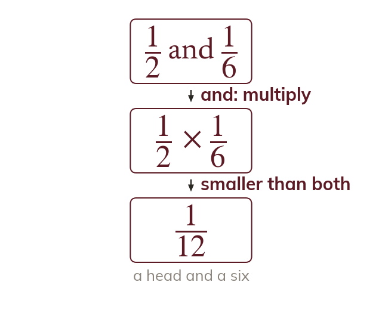
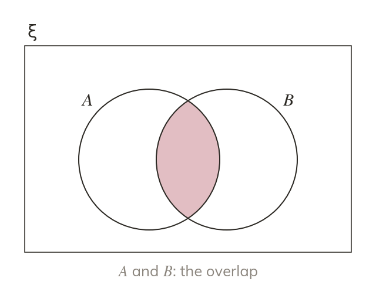
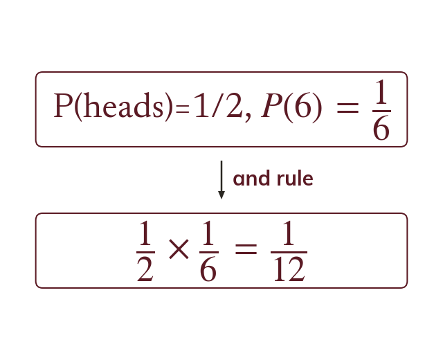
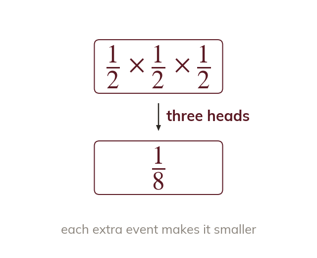
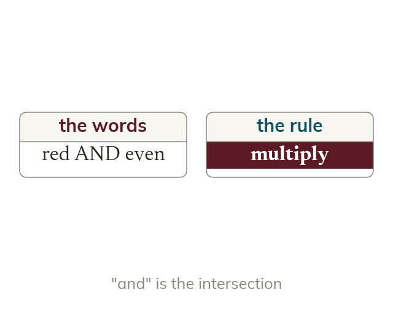
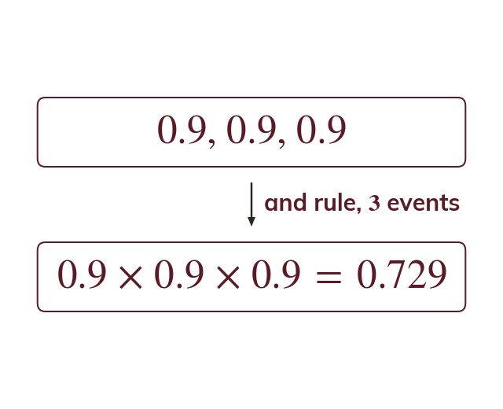

The and-rule
For two independent events, and Multiplying makes the answer smaller, which fits: both happening is less likely than either alone.
When two events are independent, their combined probability follows a simple rule: multiply. Today is about recognising an "and" situation and applying that rule correctly.
Work down the page at your own pace. Write every answer in your book first, then click to check it.
Read each card, then follow the worked examples one step at a time.

For two independent events, and Multiplying makes the answer smaller, which fits: both happening is less likely than either alone.

The rule extends to more than two independent events by multiplying all of their probabilities. In set notation and is the intersection, ∩

Pick an answer. If it's wrong, the feedback tells you which mistake it was.
Read each card, then follow the worked examples one step at a time.

The and-rule extends to any number of independent events: multiply every probability together. Each extra event makes the combined probability smaller still.

An "and" in the question signals the intersection, ∩ It usually means multiply.

Pick an answer. If it's wrong, the feedback tells you which mistake it was.
Finished? Next lesson: 9.16.3 The Or Rule.
Log in, then search for a code to practise that skill.
Videos, worksheets and more on each part of this lesson.